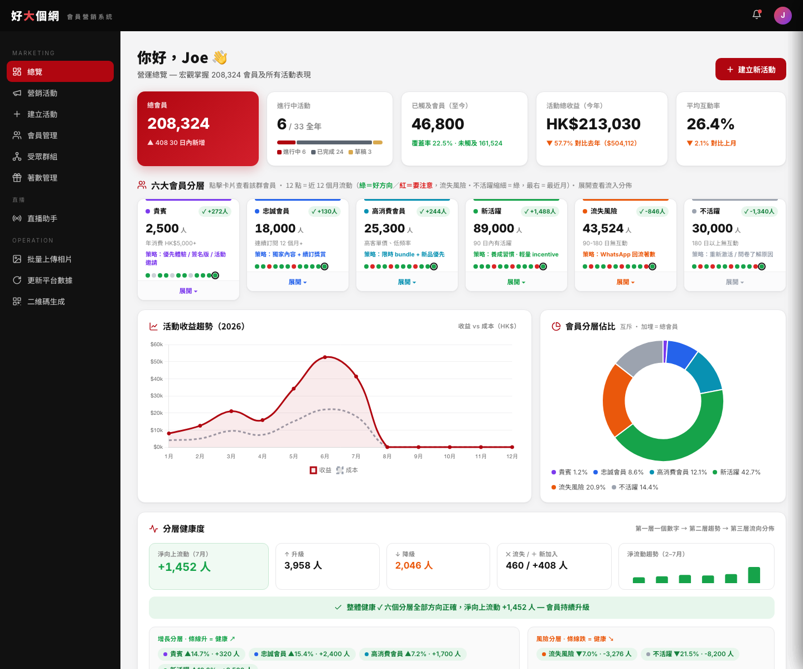
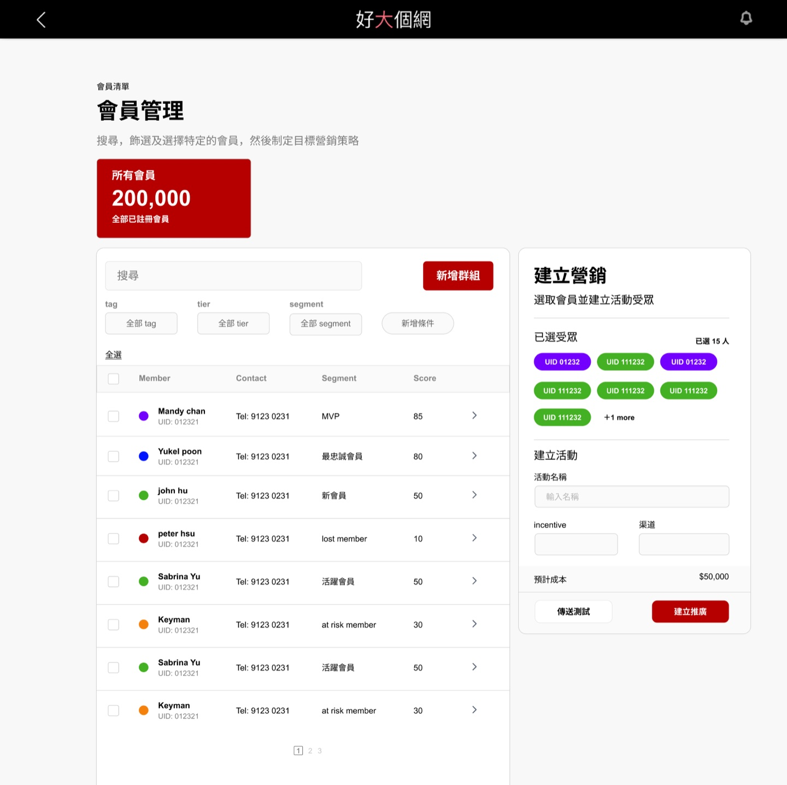
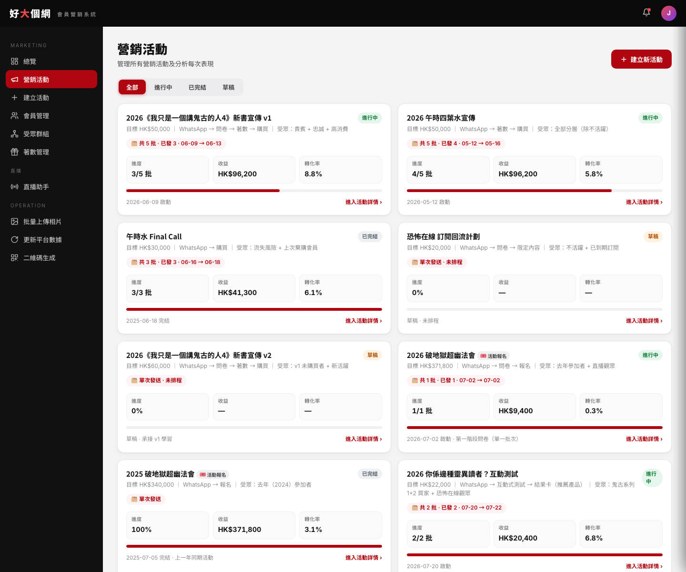
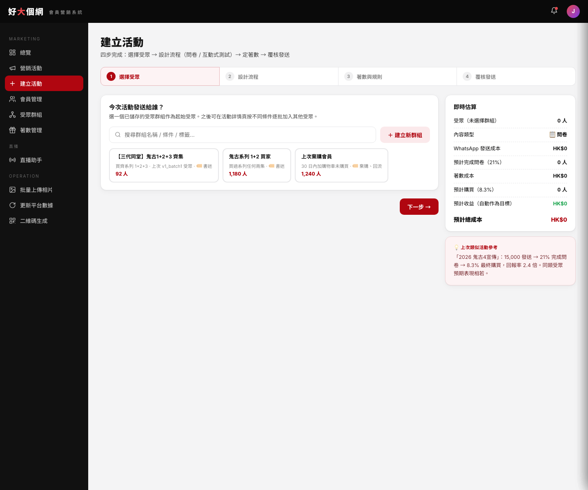
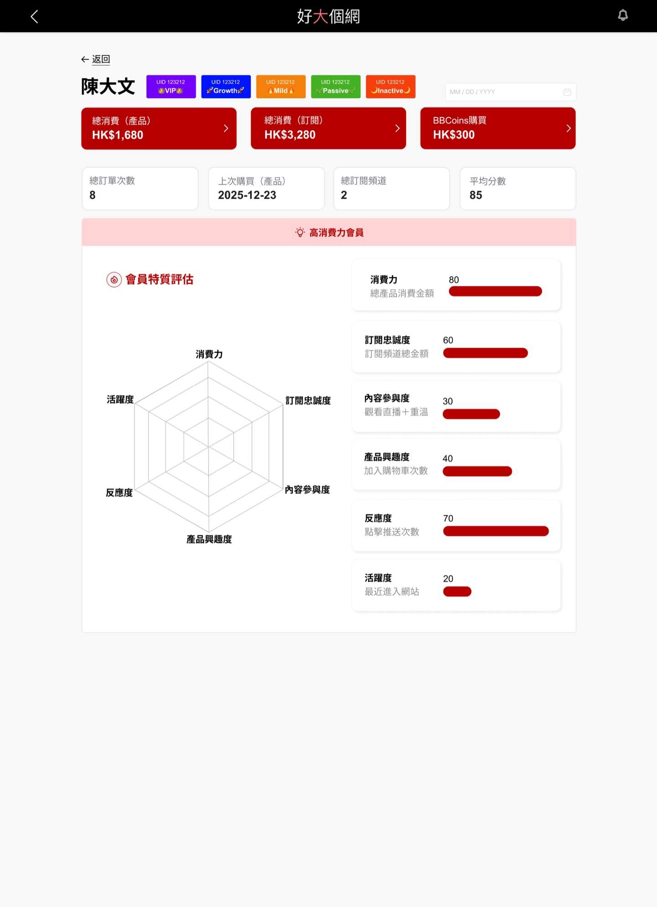
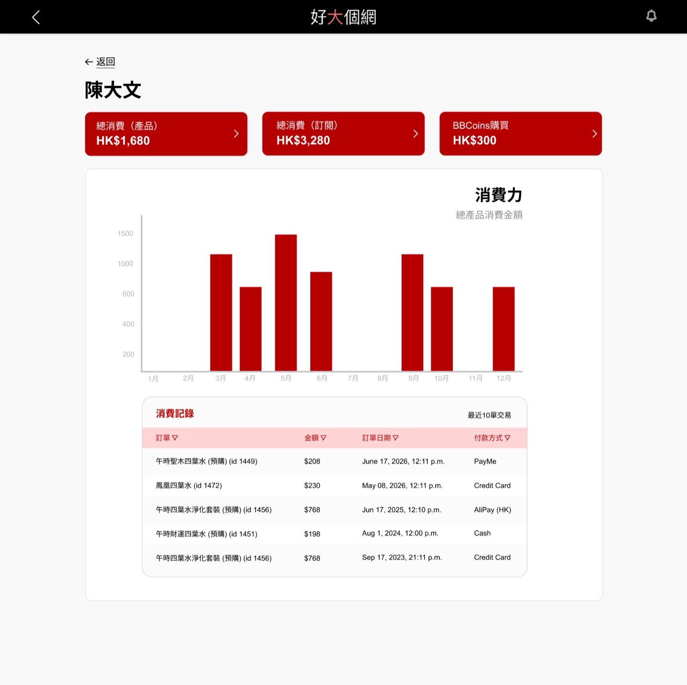

From audience data to the next best action.
I designed a CRM operating system that connects membership, content, commerce and campaign behaviour—so management can move from a portfolio-level signal to a specific audience and action without losing the reasoning in between.
Explore the CRM screen-flow library
The product challenge
好大個網 serves a mixed ecosystem of programmes, subscriptions, live participation, products and events. Useful signals existed, but they were spread across accounts, orders, pixels, surveys and campaign tools. Management could see numbers without always being able to answer the next question: who needs attention, why, and what should we do now?
The product therefore had to work at two resolutions. At the macro level, it needed to explain the health of a modelled 208,324-member population and current campaigns. At the micro level, it needed to preserve the behavioural trail behind an individual member, then turn that evidence into a reusable audience, campaign or service action.
The goal was not to put more data on a dashboard. It was to shorten the distance between a signal and a defensible action.
One operating loop
See the health of the audience
A six-level, mutually exclusive membership ladder makes the total population auditable. Direction is expressed as health rather than raw growth: an increase in valuable segments is positive, while a decrease in at-risk or inactive members is also positive.
Turn a signal into a cohort
Managers can move from segment movement, funnel loss or member behaviour into a saved audience. Manual filters and the AI filter use the same visible conditions, so automation remains editable instead of becoming a black box.
Launch, learn and act again
Campaigns are created from reusable groups, then released in deduplicated batches through Woztell. Each batch records its own audience, funnel, cost and learning, and the next batch can inherit what worked rather than restarting from a blank brief.
Macro signal. Micro evidence.
The interface connects a management-level view of portfolio health with the audience tools used to act on it. These captures come directly from the working prototype.

Decisions that shaped the system
Choose clarity over a theoretically richer segment model
I explored an overlapping value-by-status model, where a VIP could also be dormant. It preserved more nuance, but made totals and campaign ownership harder to explain. I moved back to one mutually exclusive ladder for operational clarity and kept behavioural detail available through filters and profiles.
Put the conclusion before the chart
The management reading order is consistent: conclusion first, immediate action second, detail on demand. This is why the product avoids decorative flow diagrams and uses comparable bars, lists and expandable evidence instead.
Separate committed cost from successful redemption
Campaign cost is split into fixed WhatsApp spend and redemption cost. A high redemption cost can mean the offer converted; the avoidable waste is fixed spend sent to people who never acted. The model prevents the interface from labelling success as waste.
Make batch learning part of the workflow
Each batch uses its own filters and automatically excludes people reached earlier. Funnel loss, cost and qualitative learning sit together, allowing the next batch—or the next campaign version—to inherit a specific decision rule.
Real data, honest labels
The prototype combines working interaction models with two real analytical cases. I keep those evidence types explicit: recorded figures describe a source snapshot; forecast ranges remain projections, not shipped impact.
- 7,734
- Lapsed subscribers in the 24 Jul 2026 source snapshot
- 899
- Members inside the first 30-day recovery window
- 149
- Previous-year event buyers identified for win-back
- HK$371.8K
- Recorded 2025 event revenue represented by that cohort
The churn model also identified 956 high-commitment lapsed subscribers and an average of approximately 483 new lapses per month. A separate event survey recorded 111 responses, four self-reported registrations and approximately HK$9,400 in attributed revenue at the time of the snapshot.
From portfolio signal to a campaign.
The evidence stays visible inside the operating flow: compare active campaigns, choose an audience, estimate cost and move into a structured launch without leaving the product.


The product surface
- Management dashboard: segment health, movement, campaign status and comparable performance
- Audience system: search, manual and AI-assisted filters, reusable groups, subgrouping and bulk tags
- Campaign builder: audience, content journey, incentive rules, review and batch launch
- Campaign intelligence: total and per-batch funnels, deduplication, costs, promotion-code tracking and learning
- Member profile: commercial value, content participation, pixel timeline and next-best-action context
- Live assistant: glanceable iPad view that overlays member context on the conversation Edmond is already following
A member is more than a tier.
The segment supports prioritisation; the profile preserves the purchase, subscription and participation evidence needed for a responsible individual action.


Iterations that improved clarity
From checkbox editing to a directional transfer
An early single-list editor made it hard to understand whether a member was being added, retained or removed. I replaced it with a two-column candidate-to-group transfer, keeping additions and removals visible until save.
From separate AI and manual filters to one explainable model
The AI assistant now translates a request into the same filter rows used by the manual interface. A manager can inspect, edit or delete each condition before applying it.
From campaign totals to an inspectable funnel
Every funnel step can open the people who completed it or dropped before it. That cohort can be tagged, saved or used to start the next batch, closing the loop between reporting and operation.
What the work demonstrates
- Product modelling: a coherent operating model across audience health, campaigns, individual evidence and live use
- Decision design: numbers are framed around meaning, cost logic and the next action instead of dashboard density
- Iteration: ambiguous models and interactions were discarded when they failed to explain direction clearly
- Delivery thinking: data contracts, edge cases, language rules, handoff detail and regression checks are documented alongside the prototype
Privacy note: member-level source records are intentionally not reproduced. Portfolio evidence is limited to mock interface data and anonymised aggregate analysis.